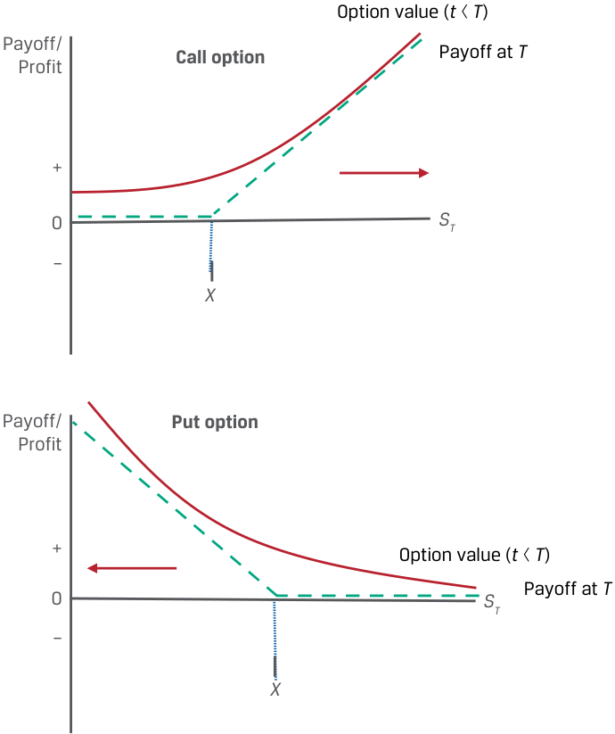
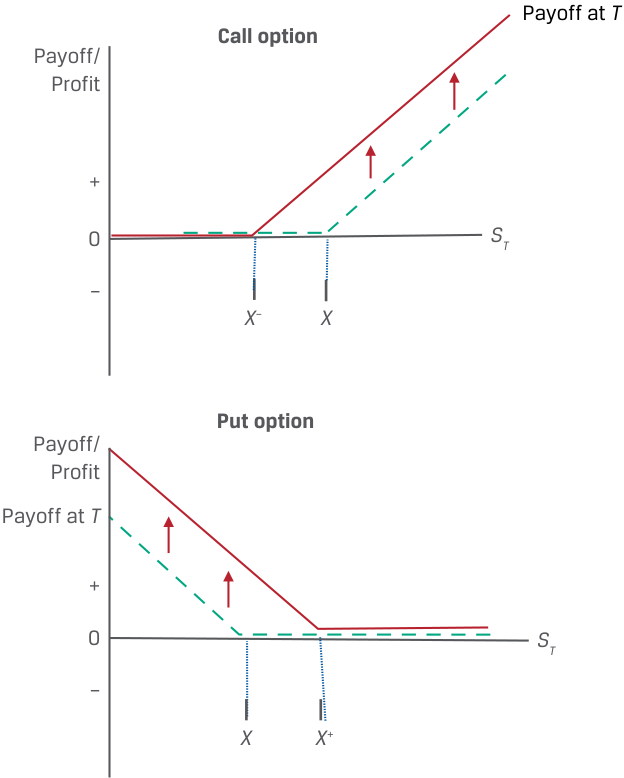
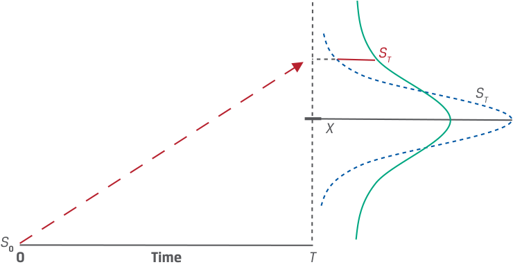

Learning Module 8 Pricing and Valuation of Options - Part 2: Factors Affecting Option Value
Volume 7: Derivatives
Learning Module 8 Pricing and Valuation of Options
Part 2/2: Factors Affecting Option Value (PDF Pages 194–204)
Tập 7: Công cụ Phái sinh (Derivatives)
Học phần 8: Định giá và Xác định giá trị của Quyền chọn (Pricing and Valuation of Options)
Phần 2/2: Các Nhân tố Ảnh hưởng đến Giá trị Quyền chọn (Trang PDF 194–204)
8
8
FACTORS AFFECTING OPTION VALUE
CÁC NHÂN TỐ ẢNH HƯỞNG ĐẾN GIÁ TRỊ QUYỀN CHỌN (FACTORS AFFECTING OPTION VALUE)
identify the factors that determine the value of an option and describe how each factor affects the value of an option
xác định các nhân tố quyết định giá trị của một quyền chọn và mô tả cách thức mỗi nhân tố ảnh hưởng đến giá trị của một quyền chọn
We now turn our attention to identifying and describing factors that affect an option’s value. Several of these factors are common to both forward commitments and options, and a number are unique to contingent claims. Factors that determine the value of an option include the value of the underlying, the exercise price, the time to maturity, the risk-free rate, the volatility of the underlying price, and any income or cost associated with owning the underlying asset.
Bây giờ chúng ta chuyển sự chú ý sang việc xác định và mô tả các nhân tố ảnh hưởng đến giá trị của một quyền chọn. Một số nhân tố trong số này là điểm chung của cả các cam kết kỳ hạn (forward commitments) và các quyền chọn (options), và một số nhân tố là nét đặc thù riêng của các quyền đòi nợ có điều kiện (contingent claims). Các nhân tố quyết định giá trị của một quyền chọn bao gồm giá trị của tài sản cơ sở (value of the underlying), giá thực hiện (exercise price), thời gian đến khi đáo hạn (time to maturity), lãi suất phi rủi ro (risk-free rate), độ biến động giá của tài sản cơ sở (volatility of the underlying price), và bất kỳ khoản thu nhập hoặc chi phí nào gắn liền với việc sở hữu tài sản cơ sở.
Value of the Underlying
Giá trị của Tài sản Cơ sở (Value of the Underlying)
Changes in the value of the underlying will have the same directional effect on the right to transact the underlying under an option contract as on the obligation to transact under a forward commitment. For example, a call option and a long forward position will both appreciate if the spot price of the underlying rises , while a put option and a short forward position will both appreciate if the spot price of the underlying falls , as shown in Exhibit 6.
Những thay đổi trong giá trị của tài sản cơ sở sẽ có tác động cùng chiều lên quyền giao dịch tài sản cơ sở theo hợp đồng quyền chọn giống như tác động lên nghĩa vụ giao dịch theo một cam kết kỳ hạn. Ví dụ, một quyền chọn mua (call option) và một vị thế mua kỳ hạn (long forward position) sẽ cùng tăng giá trị (appreciate) nếu giá giao ngay của tài sản cơ sở tăng lên, trong khi một quyền chọn bán (put option) và một vị thế bán kỳ hạn (short forward position) sẽ cùng tăng giá trị nếu giá giao ngay của tài sản cơ sở giảm xuống, như được minh họa trong Bảng 6 (Exhibit 6).
Exhibit 6: Call and Put Option Value versus Underlying Value
Bảng 6: Giá trị Quyền chọn Mua và Quyền chọn Bán so với Giá trị Tài sản Cơ sở (Exhibit 6: Call and Put Option Value versus Underlying Value)

Chú thích hình ảnh: - Đồ thị trên (Call option – Quyền chọn mua): Đường cong Option value ($t < T$) (Giá trị quyền chọn trước khi đáo hạn) nằm phía trên đường gấp khúc Payoff at $T$ (Kết quả thanh toán khi đáo hạn) và dốc lên khi $S_T$ tăng. - Đồ thị dưới (Put option – Quyền chọn bán): Đường cong Option value ($t < T$) và đường gấp khúc Payoff at $T$ dốc xuống khi $S_T$ tăng (tức tăng giá trị khi $S_T$ giảm).
A key distinction between forward commitments and contingent claims is the magnitude of a derivative’s price change for a given change in the underlying value. For a forward commitment, the derivative’s value is a linear (one-for-one) function of the underlying price, while for an option it is a non-linear relationship that depends on the likelihood that an option buyer will exercise in the future. The more likely it is that the option buyer will exercise (e.g., when the option is in the money), the more sensitive the option’s value to the underlying price. This likelihood depends on the relationship between the value of the underlying and the exercise price, a feature unique to option contracts that we turn to next.
Một điểm khác biệt quan trọng giữa các cam kết kỳ hạn và các quyền đòi nợ có điều kiện là độ lớn (magnitude) của mức thay đổi giá công cụ phái sinh ứng với một mức thay đổi nhất định trong giá trị tài sản cơ sở. Đối với một cam kết kỳ hạn, giá trị của công cụ phái sinh là một hàm tuyến tính (linear, một-đổi-một) theo giá tài sản cơ sở, trong khi đối với một quyền chọn, đó là một mối quan hệ phi tuyến tính (non-linear) phụ thuộc vào xác suất người mua quyền chọn sẽ thực hiện quyền trong tương lai. Khả năng người mua quyền chọn sẽ thực hiện quyền càng cao (ví dụ: khi quyền chọn đang ở trạng thái có lời – in the money), thì giá trị của quyền chọn càng nhạy cảm với giá tài sản cơ sở. Khả năng này phụ thuộc vào mối quan hệ giữa giá trị của tài sản cơ sở và giá thực hiện, một đặc điểm độc nhất của các hợp đồng quyền chọn mà chúng ta sẽ tìm hiểu tiếp theo.
Exercise Price
Giá Thực hiện (Exercise Price)
The exercise price is the threshold that determines whether an option buyer chooses to transact at contract maturity. For a call option representing the right to buy the underlying, the exercise price represents a lower bound on the option’s exercise value at maturity, leading to a higher option value for a lower exercise price. As call options settle based on Max (0, ST − X ) at expiry, a lower X will increase both the likelihood of exercise and the settlement value if exercised.
Giá thực hiện (exercise price) là ngưỡng quyết định liệu người mua quyền chọn có lựa chọn thực hiện giao dịch khi hợp đồng đáo hạn hay không. Đối với một quyền chọn mua đại diện cho quyền được mua tài sản cơ sở, giá thực hiện đại diện cho một cận dưới (lower bound) đối với giá trị thực hiện của quyền chọn khi đáo hạn, dẫn đến giá trị quyền chọn cao hơn khi giá thực hiện thấp hơn. Vì các quyền chọn mua được thanh toán dựa trên $\text{Max}(0, S_T - X)$ khi đáo hạn, một mức $X$ thấp hơn sẽ làm tăng cả xác suất thực hiện quyền lẫn giá trị thanh toán nếu được thực hiện.
The exercise price of a put option, in contrast, is an upper bound on its exercise value at maturity. A higher exercise price at which a put option buyer has the right to sell the underlying will therefore increase the value of the option. Exhibit 7 shows these differing effects of exercise price changes for both call and put options.
Ngược lại, giá thực hiện của một quyền chọn bán là một cận trên (upper bound) đối với giá trị thực hiện của nó khi đáo hạn. Do đó, một mức giá thực hiện cao hơn mà tại đó người mua quyền chọn bán có quyền bán tài sản cơ sở sẽ làm tăng giá trị của quyền chọn bán. Bảng 7 (Exhibit 7) thể hiện những tác động khác nhau này của sự thay đổi giá thực hiện đối với cả quyền chọn mua và quyền chọn bán.
Exhibit 7: Call and Put Option Value versus Exercise Price
Bảng 7: Giá trị Quyền chọn Mua và Quyền chọn Bán so với Giá Thực hiện (Exhibit 7: Call and Put Option Value versus Exercise Price)

Chú thích hình ảnh: - Đồ thị trên (Call option): Khi giá thực hiện giảm từ $X$ xuống $X^-$, đường kết quả thanh toán và giá trị quyền chọn mua dịch chuyển sang trái (tăng giá trị). - Đồ thị dưới (Put option): Khi giá thực hiện tăng từ $X$ lên $X^+$, đường kết quả thanh toán và giá trị quyền chọn bán dịch chuyển sang phải (tăng giá trị).
Time to Expiration
Thời gian đến khi Đáo hạn (Time to Expiration)
Recall from a prior lesson that the time value, or difference between an option’s price and its exercise value, represents the likelihood that favorable changes to the underlying price will increase the profitability of exercise. Unlike a long forward position where the buyer is equally likely to experience an increase or a decrease in the underlying price over a longer period, the one-sided (or asymmetric) payoff profile of an option allows the buyer to ignore any outcomes where the option will expire unexercised.
Hãy nhớ lại từ bài học trước rằng giá trị thời gian (time value), hay phần chênh lệch giữa giá của một quyền chọn và giá trị thực hiện của nó, đại diện cho khả năng những thay đổi thuận lợi trong giá tài sản cơ sở sẽ làm tăng mức sinh lời của việc thực hiện quyền. Không giống như một vị thế mua kỳ hạn (long forward position) nơi người mua có khả năng ngang nhau trong việc trải qua sự tăng giá hoặc giảm giá của tài sản cơ sở trong một khoảng thời gian dài hơn, hồ sơ kết quả thanh toán một phía (hay bất đối xứng – one-sided or asymmetric payoff profile) của quyền chọn cho phép người mua bỏ qua bất kỳ kết quả nào mà tại đó quyền chọn hết hạn mà không được thực hiện.
For a call option, a longer time to expiration will increase the option’s value in all cases. The price appreciation potential of an underlying is essentially unlimited and increases over longer periods, while the downside is limited to the loss of the premium.
Đối với một quyền chọn mua, thời gian đến khi đáo hạn dài hơn sẽ làm tăng giá trị của quyền chọn trong tất cả các trường hợp. Tiềm năng tăng giá của một tài sản cơ sở về cơ bản là không giới hạn và tăng lên qua các khoảng thời gian dài hơn, trong khi rủi ro giảm giá phía dưới được giới hạn ở mức tổn thất khoản phí quyền chọn.
A put option representing the right to sell the underlying also usually benefits from the passage of time. In the case of a put option, a longer time to expiration offers greater potential for price depreciation below the exercise price, while the loss is limited to the premium if the underlying price rises. However, as put option buyers await the sale of the underlying in order to receive ( X − ST ) upon exercise, a longer time to expiry reduces the present value of the payoff. While less common, in some cases a longer time to expiration will lower a put’s value, especially for deep-in-the-money puts with a longer time to expiration and a higher risk-free rate of interest.
Một quyền chọn bán đại diện cho quyền được bán tài sản cơ sở cũng thường được hưởng lợi từ sự trôi qua của thời gian (khi thời gian đáo hạn dài hơn). Trong trường hợp của quyền chọn bán, thời gian đến khi đáo hạn dài hơn mang lại tiềm năng giảm giá (price depreciation) lớn hơn xuống dưới mức giá thực hiện, trong khi khoản lỗ được giới hạn ở mức phí quyền chọn nếu giá tài sản cơ sở tăng lên. Tuy nhiên, vì người mua quyền chọn bán phải chờ đợi việc bán tài sản cơ sở để nhận được $(X - S_T)$ khi thực hiện quyền, thời gian đến khi đáo hạn dài hơn sẽ làm giảm giá trị hiện tại của khoản thanh toán nhận được. Mặc dù ít phổ biến hơn, trong một số trường hợp, thời gian đến khi đáo hạn dài hơn sẽ làm giảm giá trị của một quyền chọn bán, đặc biệt là đối với các quyền chọn bán có lời sâu (deep-in-the-money puts) có thời gian đến khi đáo hạn dài hơn và mức lãi suất phi rủi ro cao hơn.
Risk-Free Interest Rate
Lãi suất Phi Rủi ro (Risk-Free Interest Rate)
An earlier lesson showed the risk-free rate to be the opportunity cost of holding an asset, which extends to the no-arbitrage valuation of derivatives. For example, an option’s exercise value was shown to be equal to the difference between the spot price and the present value of the exercise price:
Một bài học trước đã chỉ ra rằng lãi suất phi rủi ro là chi phí cơ hội của việc nắm giữ một tài sản, điều này cũng được mở rộng sang việc định giá không kinh doanh chênh lệch giá đối với các công cụ phái sinh. Ví dụ, giá trị thực hiện của một quyền chọn đã được chứng minh là bằng phần chênh lệch giữa giá giao ngay và giá trị hiện tại (present value) của giá thực hiện:
Call Option Exercise Value: Max (0, ( St − PV( X )))
Put Option Exercise Value: Max (0, (PV( X ) − St ))
A higher risk-free rate therefore lowers the present value of the exercise price provided an option is in the money. A higher risk-free rate will increase the exercise value of a call option and decrease the exercise value of a put option. Note that the risk-free rate does not directly affect the time value of an option.
Do đó, một mức lãi suất phi rủi ro cao hơn sẽ làm giảm giá trị hiện tại của giá thực hiện với điều kiện quyền chọn đang ở trạng thái có lời (in the money). Một mức lãi suất phi rủi ro cao hơn sẽ làm tăng giá trị thực hiện của một quyền chọn mua và làm giảm giá trị thực hiện của một quyền chọn bán. Lưu ý rằng lãi suất phi rủi ro không ảnh hưởng trực tiếp đến giá trị thời gian của một quyền chọn.
Volatility of the Underlying
Độ biến động của Tài sản Cơ sở (Volatility of the Underlying)
Volatility is a measure of the expected dispersion of an underlying asset’s future price movements. Higher price volatility of the underlying increases the likelihood of a higher positive exercise value without affecting the downside case in which the option expires unexercised, as shown in Exhibit 8. Note that this effect will be the same for both call options and put options.
Độ biến động (volatility) là một thước đo về mức độ phân tán dự kiến (expected dispersion) của các biến động giá trong tương lai của một tài sản cơ sở. Độ biến động giá của tài sản cơ sở càng cao sẽ làm tăng khả năng đạt được một giá trị thực hiện dương cao hơn mà không làm ảnh hưởng đến trường hợp bất lợi phía dưới khi quyền chọn hết hạn mà không được thực hiện, như được minh họa trong Bảng 8 (Exhibit 8). Lưu ý rằng tác động này sẽ giống nhau đối với cả quyền chọn mua và quyền chọn bán.
For example, as volatility rises , a wider range of possible underlying prices increases an option’s time value and the likelihood that it will end up in the money. Lower volatility will reduce the time value of both put and call options.
Ví dụ, khi độ biến động tăng lên, phạm vi rộng hơn của các mức giá tài sản cơ sở có thể xảy ra sẽ làm tăng giá trị thời gian của quyền chọn cũng như khả năng quyền chọn sẽ kết thúc ở trạng thái có lời (in the money). Độ biến động thấp hơn sẽ làm giảm giá trị thời gian của cả quyền chọn bán và quyền chọn mua.
Exhibit 8: Volatility and Option Value
Bảng 8: Độ biến động và Giá trị Quyền chọn (Exhibit 8: Volatility and Option Value)

Chú thích hình ảnh: - Khi độ biến động (volatility) tăng lên, biên độ phân tán của giá tài sản cơ sở $S_T$ quanh giá thực hiện $X$ tại thời điểm đáo hạn $T$ mở rộng ra, làm tăng tiềm năng sinh lời khi quyền chọn ở trạng thái ITM trong khi mức lỗ tối đa khi OTM vẫn được giới hạn.
Income or Cost Related to Owning Underlying Asset
Thu nhập hoặc Chi phí Liên quan đến Việc Sở hữu Tài sản Cơ sở (Income or Cost Related to Owning Underlying Asset)
In a prior lesson, the benefits and costs of owning an underlying asset over time were shown to affect the relationship of spot versus forward prices. For example, income or other, non-cash benefits (such as convenience yield) accrue to the owner of an underlying asset but not to the owner of a derivative. This effect holds for both forward commitments and contingent claims. Income or other benefits of ownership decrease the value of a call and increase the value of a put. Carry costs (such as storage and insurance for commodities) have the opposite effect, increasing the value of a call option and decreasing the value of a put. A summary of the factors that affect an option’s value is provided in Exhibit 9, with the sign on the option value referring to the impact (positive or negative) of an increase in the factor.
Trong một bài học trước, những lợi ích và chi phí của việc sở hữu một tài sản cơ sở theo thời gian đã được chứng minh là có ảnh hưởng đến mối quan hệ giữa giá giao ngay và giá kỳ hạn. Ví dụ, thu nhập hoặc các lợi ích phi tiền mặt khác (chẳng hạn như lợi suất thuận tiện – convenience yield) thuộc về người sở hữu tài sản cơ sở nhưng không thuộc về người sở hữu công cụ phái sinh. Tác động này đúng với cả các cam kết kỳ hạn và các quyền đòi nợ có điều kiện. Thu nhập hoặc các lợi ích khác của quyền sở hữu sẽ làm giảm giá trị của một quyền chọn mua và làm tăng giá trị của một quyền chọn bán. Chi phí lưu giữ (carry costs, chẳng hạn như chi phí lưu kho và bảo hiểm đối với hàng hóa) có tác động ngược lại, làm tăng giá trị của một quyền chọn mua và làm giảm giá trị của một quyền chọn bán. Bảng tóm tắt các nhân tố ảnh hưởng đến giá trị của một quyền chọn được cung cấp trong Bảng 9 (Exhibit 9), với dấu trên giá trị quyền chọn đề cập đến tác động (cùng chiều dương hay ngược chiều âm) của sự gia tăng trong nhân tố đó.
Exhibit 9: Factors That Affect the Value of an Option
Bảng 9: Các Nhân tố Ảnh hưởng đến Giá trị của một Quyền chọn (Exhibit 9: Factors That Affect the Value of an Option)
| Factor | Call Value | Put Value |
|---|---|---|
| Value of the underlying | + | − |
| Exercise price | − | + |
| Time to expiration | + | +/− |
| Risk-free interest rate | + | − |
| Volatility of the underlying | + | + |
| Income/cost related to owning the underlying | −/+ | +/− |
| Nhân tố (Factor) (khi tăng lên) | Giá trị Quyền chọn Mua (Call Value) | Giá trị Quyền chọn Bán (Put Value) |
|---|---|---|
| Giá trị của tài sản cơ sở (Value of the underlying) | + | − |
| Giá thực hiện (Exercise price) | − | + |
| Thời gian đến khi đáo hạn (Time to expiration) | + | +/− |
| Lãi suất phi rủi ro (Risk-free interest rate) | + | − |
| Độ biến động của tài sản cơ sở (Volatility of the underlying) | + | + |
| Thu nhập/chi phí liên quan đến việc sở hữu tài sản cơ sở (Income/cost related to owning the underlying) | −/+ | +/− |
QUESTION SET
BỘ CÂU HỎI (QUESTION SET)
Factors That Affect Option Value
Các Nhân tố Ảnh hưởng đến Giá trị Quyền chọn (Factors That Affect Option Value)
- Determine the correct answers to complete the following sentence: For a call option representing the right to buy the underlying, the exercise price represents a __ bound on an option’s exercise value at maturity, leading to a ____ option value for a lower exercise price.
- Xác định các câu trả lời đúng để hoàn thành câu sau đây: Đối với một quyền chọn mua đại diện cho quyền được mua tài sản cơ sở, giá thực hiện đại diện cho một cận __ đối với giá trị thực hiện của quyền chọn khi đáo hạn, dẫn đến giá trị quyền chọn ____ ứng với một mức giá thực hiện thấp hơn.
Solution:
Lời giải:
For a call option representing the right to buy the underlying, the exercise price represents a lower bound on an option’s exercise value at maturity, leading to a higher option value for a lower exercise price.
Đối với một quyền chọn mua đại diện cho quyền được mua tài sản cơ sở, giá thực hiện đại diện cho một cận dưới (lower) đối với giá trị thực hiện của quyền chọn khi đáo hạn, dẫn đến giá trị quyền chọn cao hơn (higher) ứng với một mức giá thực hiện thấp hơn.
-
Match the following changes in factors affecting option value (holding other factors constant) with their corresponding option value change:
-
A lower exercise price ( X ) A. Increases the value of both a call option and a put option
-
A lower underlying price ( ST ) B. Increases the value of a call option
-
A rise in the volatility of the underlying C. Increases the value of a put option price
- Hãy ghép những thay đổi sau đây trong các nhân tố ảnh hưởng đến giá trị quyền chọn (giữ các nhân tố khác không đổi) với sự thay đổi giá trị quyền chọn tương ứng của chúng:
Solution:
| Thay đổi trong nhân tố | Thay đổi giá trị quyền chọn |
|---|---|
| 1. Giá thực hiện ($X$) thấp hơn | A. Làm tăng giá trị của cả quyền chọn mua và quyền chọn bán |
| 2. Giá tài sản cơ sở ($S_T$) thấp hơn | B. Làm tăng giá trị của quyền chọn mua |
| 3. Sự gia tăng trong độ biến động của giá tài sản cơ sở | C. Làm tăng giá trị của quyền chọn bán |
Lời giải:
1. B is correct. A lower exercise price increases the value of a call option, since for a given underlying price at maturity of ST , the call option settlement value of Max (0, ST − X ) will increase for a lower X .
1. B là đáp án đúng. Giá thực hiện thấp hơn làm tăng giá trị của quyền chọn mua, bởi vì ứng với một mức giá tài sản cơ sở nhất định khi đáo hạn là $S_T$, giá trị thanh toán của quyền chọn mua là $\text{Max}(0, S_T - X)$ sẽ tăng lên khi $X$ thấp hơn.
2. C is correct. A lower underlying price ( ST ) will increase the value of a put option. Since a put option is the right to sell an underlying at the exercise price ( X ), the put option settlement value of Max (0, X − ST ) will increase as ST declines.
2. C là đáp án đúng. Giá tài sản cơ sở ($S_T$) thấp hơn sẽ làm tăng giá trị của quyền chọn bán. Vì quyền chọn bán là quyền được bán một tài sản cơ sở tại mức giá thực hiện ($X$), giá trị thanh toán của quyền chọn bán là $\text{Max}(0, X - S_T)$ sẽ tăng lên khi $S_T$ giảm xuống.
3. A is correct. A rise in the volatility of the underlying price will increase the value of both a call option and a put option. Greater price variability of the underlying will increase the probability of a higher positive exercise value for a call or a put option without affecting the downside case where the option expires unexercised.
3. A là đáp án đúng. Sự gia tăng trong độ biến động của giá tài sản cơ sở sẽ làm tăng giá trị của cả quyền chọn mua và quyền chọn bán. Biến thiên giá lớn hơn của tài sản cơ sở sẽ làm tăng xác suất đạt được một giá trị thực hiện dương cao hơn đối với quyền chọn mua hoặc quyền chọn bán mà không làm ảnh hưởng đến trường hợp bất lợi phía dưới nơi quyền chọn hết hạn mà không được thực hiện.
- Determine the correct answers to complete the following sentences: A key distinction between forward commitments and contingent claims is the _ of a derivative’s price change for a given change in the underlying value. For a forward commitment, the derivative value is a function of the underlying price, while for an option it is a ____ relationship.
- Xác định các câu trả lời đúng để hoàn thành các câu sau đây: Một điểm khác biệt quan trọng giữa các cam kết kỳ hạn và các quyền đòi nợ có điều kiện là _ của mức thay đổi giá công cụ phái sinh ứng với một mức thay đổi nhất định trong giá trị tài sản cơ sở. Đối với một cam kết kỳ hạn, giá trị công cụ phái sinh là một hàm theo giá tài sản cơ sở, trong khi đối với một quyền chọn thì đó là một mối quan hệ ____.
Solution:
Lời giải:
A key distinction between forward commitments and contingent claims is the magnitude of a derivative’s price change for a given change in the underlying value. For a forward commitment, the derivative value is a linear function of the underlying price, while for an option it is a non-linear relationship.
Một điểm khác biệt quan trọng giữa các cam kết kỳ hạn và các quyền đòi nợ có điều kiện là độ lớn (magnitude) của mức thay đổi giá công cụ phái sinh ứng với một mức thay đổi nhất định trong giá trị tài sản cơ sở. Đối với một cam kết kỳ hạn, giá trị công cụ phái sinh là một hàm tuyến tính (linear) theo giá tài sản cơ sở, trong khi đối với một quyền chọn thì đó là một mối quan hệ phi tuyến tính (non-linear).
- Explain the effect of a decrease in the risk-free rate of interest on the value of put and call options and justify your answer.
-
Solution:
-
A decrease in the risk-free rate increases the present value of an option’s exercise price (PV( X )). The exercise value for an in-the-money call option will fall, since ( St − PV( X )) is lower for a higher PV( X ), while the exercise value for an in-the-money put option will rise, since (PV( X ) − St ) rises for a higher PV( X ). Note that the time value of an option is not directly affected by the risk-free rate.
- Giải thích tác động của sự sụt giảm trong lãi suất phi rủi ro lên giá trị của quyền chọn bán và quyền chọn mua, đồng thời giải thích lý do cho câu trả lời của bạn.
Lời giải:
- Sự sụt giảm trong lãi suất phi rủi ro làm tăng giá trị hiện tại của giá thực hiện quyền chọn ($\text{PV}(X)$). Giá trị thực hiện của một quyền chọn mua đang có lời (in-the-money call) sẽ giảm xuống, bởi vì $(S_t - \text{PV}(X))$ thấp hơn khi $\text{PV}(X)$ cao hơn, trong khi giá trị thực hiện của một quyền chọn bán đang có lời (in-the-money put) sẽ tăng lên, bởi vì $(\text{PV}(X) - S_t)$ tăng lên khi $\text{PV}(X)$ cao hơn. Lưu ý rằng giá trị thời gian của một quyền chọn không bị ảnh hưởng trực tiếp bởi lãi suất phi rủi ro.
~~PRACTICE PROBLEMS~~
BÀI TẬP THỰC HÀNH (PRACTICE PROBLEMS)
The following information relates to questions 1-9
Thông tin sau đây liên quan đến các câu hỏi từ 1 đến 9
The Viswan Family Office (VFO) owns non-dividend-paying shares of Biomian Limited that are currently priced ( S0 ) at INR 295 per share. VFO’s CIO is considering an offer to sell shares at a forward price ( F0 ( T )) of INR 300.84 per share in six months based on a risk-free rate of 4%. You have been asked to advise on the purchase of a put option or the sale of a call option with an exercise price ( X ) equal to the forward price ( F0 ( T )) as alternatives to a forward share sale.
Văn phòng Quản lý Gia sản Viswan (Viswan Family Office – VFO) sở hữu cổ phiếu không trả cổ tức của Biomian Limited hiện đang có giá ($S_0$) là 295 INR mỗi cổ phiếu. Giám đốc Đầu tư (CIO) của VFO đang cân nhắc một lời đề nghị bán cổ phiếu tại mức giá kỳ hạn ($F_0(T)$) là 300,84 INR mỗi cổ phiếu sau thời gian 6 tháng dựa trên mức lãi suất phi rủi ro là 4%. Bạn được yêu cầu tư vấn về việc mua một quyền chọn bán (purchase of a put option) hoặc bán một quyền chọn mua (sale of a call option) có giá thực hiện ($X$) bằng với giá kỳ hạn ($F_0(T)$) như những phương án thay thế cho việc bán cổ phiếu kỳ hạn.
1. Which of the following statements correctly describes the put option and call option premiums given the relationship between Biomian’s current price of INR 295 and the exercise price equal to the forward price of INR 300.84?
1. Phát biểu nào sau đây mô tả đúng về phí quyền chọn bán và phí quyền chọn mua dựa trên mối quan hệ giữa mức giá hiện tại 295 INR của Biomian và mức giá thực hiện bằng với giá kỳ hạn 300,84 INR?
-
A. The call option’s premium consists solely of time value, and the put option’s premium consists solely of exercise value.
-
B. The call option’s premium consists solely of exercise value, and the put option’s premium consists solely of time value.
-
C. The call option’s premium consists solely of time value, and the put option’s premium consists solely of time value.
-
A. Phí quyền chọn mua chỉ bao gồm giá trị thời gian, và phí quyền chọn bán chỉ bao gồm giá trị thực hiện.
-
B. Phí quyền chọn mua chỉ bao gồm giá trị thực hiện, và phí quyền chọn bán chỉ bao gồm giá trị thời gian.
-
C. Phí quyền chọn mua chỉ bao gồm giá trị thời gian, và phí quyền chọn bán cũng chỉ bao gồm giá trị thời gian.
2. Which of the following statements correctly describes an important distinction between the two strategies of buying a put option and selling a call option with respect to option time value decay?
2. Phát biểu nào sau đây mô tả đúng một điểm khác biệt quan trọng giữa hai chiến lược mua quyền chọn bán và bán quyền chọn mua xét về mặt sự hao mòn giá trị thời gian (time value decay) của quyền chọn?
-
A. Time value decay is a benefit to both option strategies.
-
B. Time value decay is a cost to both option strategies.
-
C. Time value decay is a benefit to selling a call option and a cost to buying a put option.
-
A. Sự hao mòn giá trị thời gian là một lợi ích đối với cả hai chiến lược quyền chọn.
-
B. Sự hao mòn giá trị thời gian là một chi phí đối với cả hai chiến lược quyền chọn.
-
C. Sự hao mòn giá trị thời gian là một lợi ích đối với việc bán quyền chọn mua và là một chi phí đối với việc mua quyền chọn bán.
3. VFO is considering the purchase of the put option to hedge against a decline in Biomian’s share price. Which of the following statements best characterizes the trade-off between the put and the forward based on no-arbitrage pricing?
3. VFO đang cân nhắc việc mua quyền chọn bán để phòng ngừa rủi ro (hedge) trước sự sụt giảm giá cổ phiếu của Biomian. Phát biểu nào sau đây mô tả đúng nhất sự đánh đổi (trade-off) giữa quyền chọn bán và hợp đồng kỳ hạn dựa trên nguyên tắc định giá không kinh doanh chênh lệch giá?
-
A. The gain on the forward sale will equal the purchased put option’s profit at maturity provided the put option ends up in the money at maturity.
-
B. The loss on the forward sale will exceed the loss on the purchased put at maturity if Biomian’s share price exceeds the forward price by more than the initial put premium paid.
-
C. We do not have enough information to answer this question, since we do not know the time value of the option at maturity.
-
A. Khoản lãi từ việc bán kỳ hạn sẽ bằng với lợi nhuận của quyền chọn bán đã mua khi đáo hạn với điều kiện quyền chọn bán kết thúc ở trạng thái có lời (in the money) khi đáo hạn.
-
B. Khoản lỗ từ việc bán kỳ hạn sẽ vượt quá khoản lỗ của quyền chọn bán đã mua khi đáo hạn nếu giá cổ phiếu của Biomian vượt quá giá kỳ hạn một mức lớn hơn khoản phí quyền chọn bán ban đầu đã trả.
-
C. Chúng ta không có đủ thông tin để trả lời câu hỏi này, bởi vì chúng ta không biết giá trị thời gian của quyền chọn khi đáo hạn.
4. In evaluating the purchased put strategy (with X = F0 ( T )), the CIO has asked you to consider selling the put in three months’ time if its price appreciates over that period. Which of the following best characterizes the no-arbitrage put price at
4. Khi đánh giá chiến lược mua quyền chọn bán (với $X = F_0(T)$), CIO đã yêu cầu bạn cân nhắc việc bán lại quyền chọn bán đó sau thời gian 3 tháng nếu giá của nó tăng lên trong khoảng thời gian đó. Phương án nào sau đây mô tả đúng nhất mức giá quyền chọn bán không kinh doanh chênh lệch giá tại
that time?
thời điểm đó?
-
A. As VFO will exercise only if the spot price is below the exercise price, the lower bound of the put price is the greater of zero and the present value of the spot price minus the exercise price.
-
B. As VFO will exercise only if the spot price is below the exercise price, the upper bound of the put price equals the present value of the exercise price minus the spot price.
-
C. The put price can be no greater than the forward price and no less than the greater of zero and the present value of the exercise price minus the spot price.
-
A. Vì VFO sẽ chỉ thực hiện quyền nếu giá giao ngay thấp hơn giá thực hiện, cận dưới của giá quyền chọn bán là giá trị lớn hơn giữa số không và giá trị hiện tại của giá giao ngay trừ đi giá thực hiện.
-
B. Vì VFO sẽ chỉ thực hiện quyền nếu giá giao ngay thấp hơn giá thực hiện, cận trên của giá quyền chọn bán bằng giá trị hiện tại của giá thực hiện trừ đi giá giao ngay.
-
C. Giá quyền chọn bán không thể lớn hơn giá kỳ hạn và không thể nhỏ hơn giá trị lớn hơn giữa số không và giá trị hiện tại của giá thực hiện trừ đi giá giao ngay.
5. VFO is considering a sold call strategy to generate income from the sale of a call. In your scenario analysis of the sold call option alternative, VFO has asked you to value the call option in three months’ time if Biomian’s spot price is INR 325 per share. Given an estimated call price of INR 46.41 at that time, which of the following correctly reflects the relationship between the call’s exercise value and its time value?
5. VFO đang cân nhắc chiến lược bán quyền chọn mua (sold call strategy) để tạo ra thu nhập từ việc bán quyền chọn mua. Trong phân tích kịch bản của bạn về phương án bán quyền chọn mua, VFO đã yêu cầu bạn định giá quyền chọn mua sau thời gian 3 tháng nếu giá giao ngay của Biomian là 325 INR mỗi cổ phiếu. Với mức giá quyền chọn mua ước tính là 46,41 INR vào thời điểm đó, phương án nào sau đây phản ánh đúng mối quan hệ giữa giá trị thực hiện và giá trị thời gian của quyền chọn mua?
-
A. The call’s exercise value is INR 24.16, and its time value is INR 22.25.
-
B. The call’s exercise value is INR 27.10, and its time value is INR 19.31.
-
C. The call’s exercise value is INR 20.99, and its time value is INR 25.42.
-
A. Giá trị thực hiện của quyền chọn mua là 24,16 INR, và giá trị thời gian của nó là 22,25 INR.
-
B. Giá trị thực hiện của quyền chọn mua là 27,10 INR, và giá trị thời gian của nó là 19,31 INR.
-
C. Giá trị thực hiện của quyền chọn mua là 20,99 INR, và giá trị thời gian của nó là 25,42 INR.
6. Which of the following statements correctly describes how VFO could replicate selling a call option on Biomian if exercise is certain?
6. Phát biểu nào sau đây mô tả đúng cách thức VFO có thể mô phỏng (replicate) việc bán một quyền chọn mua đối với cổ phiếu Biomian nếu việc thực hiện quyền là chắc chắn?
-
A. Borrow X (1 + r )–T at the risk-free rate and use the proceeds to buy Biomian stock at the current spot price, S 0. At expiration, sell the Biomian stock and use the proceeds to pay off the loan.
-
B. Sell short Biomian stock at the current spot price, S 0, and use the proceeds to lend X (1 + r )–T at the risk-free rate. At expiration, receive X as repayment of the risk-free loan and buy back the Biomian stock.
-
C. Sell short Biomian stock at the current spot price, S 0, and borrow X (1 + r )–T at the risk-free rate. At expiration, pay off the risk-free loan of X and buy back the Biomian stock.
-
A. Vay $X(1 + r)^{-T}$ ở mức lãi suất phi rủi ro và sử dụng số tiền thu được để mua cổ phiếu Biomian tại mức giá giao ngay hiện tại, $S_0$. Khi đáo hạn, bán cổ phiếu Biomian và sử dụng số tiền thu được để trả hết khoản vay.
-
B. Bán khống (sell short) cổ phiếu Biomian tại mức giá giao ngay hiện tại, $S_0$, và sử dụng số tiền thu được để cho vay $X(1 + r)^{-T}$ ở mức lãi suất phi rủi ro. Khi đáo hạn, nhận $X$ từ việc hoàn trả khoản cho vay phi rủi ro và mua lại cổ phiếu Biomian.
-
C. Bán khống cổ phiếu Biomian tại mức giá giao ngay hiện tại, $S_0$, và vay $X(1 + r)^{-T}$ ở mức lãi suất phi rủi ro. Khi đáo hạn, trả hết khoản vay phi rủi ro trị giá $X$ và mua lại cổ phiếu Biomian.
7. In comparing the sold call and purchased put strategies at the forward price, VFO’s CIO is concerned about how an increase in the volatility of the underlying Biomian shares affects option premiums. Which of the following statements about volatility change and its effect on strategy is most accurate?
7. Khi so sánh chiến lược bán quyền chọn mua và mua quyền chọn bán tại mức giá kỳ hạn, CIO của VFO lo ngại về việc sự gia tăng độ biến động (volatility) của cổ phiếu cơ sở Biomian sẽ ảnh hưởng như thế nào đến phí quyền chọn. Phát biểu nào sau đây về sự thay đổi độ biến động và tác động của nó lên chiến lược là chính xác nhất?
-
A. An increase in the volatility of the underlying shares has the same effect on call and put option values, so this change should not affect VFO’s strategy decision.
-
B. Since changes in the volatility of the underlying shares have the opposite effect on put versus call options, this change will increase the attractiveness of the put strategy versus the call strategy.
-
A. Sự gia tăng độ biến động của cổ phiếu cơ sở có tác động giống nhau lên giá trị quyền chọn mua và quyền chọn bán, vì vậy sự thay đổi này sẽ không ảnh hưởng đến quyết định lựa chọn chiến lược của VFO.
-
B. Vì những thay đổi trong độ biến động của cổ phiếu cơ sở có tác động ngược chiều lên quyền chọn bán so với quyền chọn mua, sự thay đổi này sẽ làm tăng sức hấp dẫn của chiến lược quyền chọn bán so với chiến lược quyền chọn mua.
- C. An increase in the volatility of the underlying shares will increase both the cost of the purchased put strategy and the premium received on the sold call strategy, so this change will increase the attractiveness of the call strategy versus the put strategy.
- C. Sự gia tăng độ biến động của cổ phiếu cơ sở sẽ làm tăng cả chi phí của chiến lược mua quyền chọn bán lẫn khoản phí quyền chọn nhận được từ chiến lược bán quyền chọn mua, vì vậy sự thay đổi này sẽ làm tăng sức hấp dẫn của chiến lược quyền chọn mua so với chiến lược quyền chọn bán.
8. In comparing the Biomian purchased put and sold call strategies, which of the following statements is most correct about how the call and put values are affected by changes in factors other than volatility?
8. Khi so sánh chiến lược mua quyền chọn bán và bán quyền chọn mua đối với Biomian, phát biểu nào sau đây là đúng nhất về cách thức giá trị quyền chọn mua và quyền chọn bán bị ảnh hưởng bởi những thay đổi trong các nhân tố ngoài độ biến động?
-
A. Changes in the time to expiration and the risk-free rate have a similar directional effect on the put and call strategies, while changes in the exercise price tend to have the opposite effect.
-
B. Changes in the time to expiration tend to have a similar directional effect on the put and call strategies, while changes in the exercise price and the risk-free rate tend to have the opposite effect.
-
C. Changes in the risk-free rate have a similar directional effect on the put and call strategies, while changes in the exercise price and the time to expiration tend to have the opposite effect.
-
A. Những thay đổi trong thời gian đến khi đáo hạn và lãi suất phi rủi ro có tác động cùng chiều tương tự nhau lên chiến lược quyền chọn bán và quyền chọn mua, trong khi những thay đổi trong giá thực hiện có xu hướng có tác động ngược chiều.
-
B. Những thay đổi trong thời gian đến khi đáo hạn có xu hướng có tác động cùng chiều tương tự nhau lên chiến lược quyền chọn bán và quyền chọn mua, trong khi những thay đổi trong giá thực hiện và lãi suất phi rủi ro có xu hướng có tác động ngược chiều.
-
C. Những thay đổi trong lãi suất phi rủi ro có tác động cùng chiều tương tự nhau lên chiến lược quyền chọn bán và quyền chọn mua, trong khi những thay đổi trong giá thực hiện và thời gian đến khi đáo hạn có xu hướng có tác động ngược chiều.
9. VFO is concerned about the potential for increasing interest rates in the future. Which of the following statements provides the most correct description as to how rising rates after entering into the two option strategies would affect the option valuations?
9. VFO đang lo ngại về khả năng lãi suất tăng lên trong tương lai. Phát biểu nào sau đây mô tả đúng nhất về cách thức lãi suất tăng lên sau khi đã tham gia vào hai chiến lược quyền chọn sẽ ảnh hưởng đến việc định giá quyền chọn?
-
A. Rising risk-free rates would make the selling a call option strategy more advantageous to VFO because call options increase in value with higher risk-free rates.
-
B. Rising risk-free rates would make the buying a put option strategy more advantageous to VFO because the company locks in the put option premium at lower interest rates.
-
C. Rising risk-free rates are a negative for both option strategies.
-
A. Lãi suất phi rủi ro tăng lên sẽ làm cho chiến lược bán quyền chọn mua có lợi hơn cho VFO bởi vì quyền chọn mua tăng giá trị khi lãi suất phi rủi ro cao hơn.
-
B. Lãi suất phi rủi ro tăng lên sẽ làm cho chiến lược mua quyền chọn bán có lợi hơn cho VFO bởi vì công ty đã khóa chặt (locks in) mức phí quyền chọn bán ở mức lãi suất thấp hơn.
-
C. Lãi suất phi rủi ro tăng lên là một yếu tố bất lợi (negative) đối với cả hai chiến lược quyền chọn.
~~SOLUTIONS~~
LỜI GIẢI (SOLUTIONS)
-
C is correct. The exercise value of both the call and put options are zero because the present value of the exercise price is INR 295, which is equivalent to the stock price of INR 295. Thus, both option premiums reflect time value only. A is incorrect as this statement does not properly account for the discounting of the exercise price. B is incorrect as the call option’s premium does not reflect exercise value.
-
C is correct. The time value component of an option premium declines toward zero as time passes toward the expiration date. A purchased option declines in value, all else equal, because of the time value decline. A sold option increases in value, all else equal, because of the time value decline. A is incorrect as time value decay is a cost to the purchased put option strategy, and B is incorrect as time value decay is a benefit to the sold option strategy.
-
The correct answer is B. The loss on the forward sale will be greater than the loss on the purchased put at maturity if Biomian’s share price exceeds the forward price by more than the initial put premium. VFO’s downside return is limited to the put premium paid, while the forward sale has unlimited downside as Biomian shares appreciate. A is incorrect as it does not take the put premium paid into account, while C is incorrect as the time value of an option is equal to zero at maturity.
-
The correct answer is C. The put exercise price, X (equal to F0 ( T ) in this case), represents the upper bound on the put value, while the lower bound is the greater of the present value of the exercise price minus the spot price and zero:
- Max (0, X( 1 + r)− (T−t) − St ) < pt ≤ X
-
C là đáp án đúng. Giá trị thực hiện của cả quyền chọn mua và quyền chọn bán đều bằng không bởi vì giá trị hiện tại của giá thực hiện là 295 INR ($\text{PV}(X) = 300,84 \times (1,04)^{-0,5} = 295\text{ INR}$), tương đương với mức giá cổ phiếu hiện tại là 295 INR. Do đó, cả hai khoản phí quyền chọn đều chỉ phản ánh giá trị thời gian. A không đúng vì phát biểu này không tính đến việc chiết khấu giá thực hiện một cách hợp lý. B không đúng vì phí quyền chọn mua không phản ánh giá trị thực hiện.
-
C là đáp án đúng. Thành phần giá trị thời gian trong phí quyền chọn giảm dần về không khi thời gian trôi dần về ngày đáo hạn. Một quyền chọn đã mua sẽ giảm giá trị, khi các yếu tố khác không đổi, do sự sụt giảm của giá trị thời gian. Một vị thế bán quyền chọn sẽ có lợi (giảm nghĩa vụ nợ), khi các yếu tố khác không đổi, nhờ sự sụt giảm của giá trị thời gian. A không đúng vì sự hao mòn giá trị thời gian là một chi phí đối với chiến lược mua quyền chọn bán, và B không đúng vì sự hao mòn giá trị thời gian là một lợi ích đối với chiến lược bán quyền chọn.
-
Đáp án đúng là B. Khoản lỗ từ việc bán kỳ hạn sẽ lớn hơn khoản lỗ của quyền chọn bán đã mua khi đáo hạn nếu giá cổ phiếu của Biomian vượt quá giá kỳ hạn một mức lớn hơn khoản phí quyền chọn bán ban đầu. Mức lỗ phía dưới (downside return) của VFO được giới hạn ở khoản phí quyền chọn bán đã trả, trong khi giao dịch bán kỳ hạn có mức lỗ không giới hạn khi cổ phiếu Biomian tăng giá. A không đúng vì nó không tính đến khoản phí quyền chọn bán đã trả, trong khi C không đúng vì giá trị thời gian của một quyền chọn bằng không khi đáo hạn.
-
Đáp án đúng là C. Giá thực hiện của quyền chọn bán, $X$ (bằng với $F_0(T)$ trong trường hợp này), đại diện cho cận trên đối với giá trị quyền chọn bán, trong khi cận dưới là giá trị lớn hơn giữa giá trị hiện tại của giá thực hiện trừ đi giá giao ngay và số không:
A is incorrect, as the lower bound of the put price is the greater of zero and the present value of the exercise price minus the spot price, not the present value of the spot price minus the exercise price. B is incorrect, as the lower , not the upper, bound of the put price equals the present value of the exercise price minus the spot price.
A không đúng vì cận dưới của giá quyền chọn bán là giá trị lớn hơn giữa số không và giá trị hiện tại của giá thực hiện trừ đi giá giao ngay, chứ không phải giá trị hiện tại của giá giao ngay trừ đi giá thực hiện. B không đúng vì cận dưới, chứ không phải cận trên, của giá quyền chọn bán bằng giá trị hiện tại của giá thực hiện trừ đi giá giao ngay.
- The correct answer is B. The option price is equal to the sum of the exercise value and the time value. A call option’s exercise value is equal to the greater of zero and the spot price minus the present value of the exercise price:
-
Max (0, St − X( 1 + r)− (T−t) )
-
= Max(0, INR325 − INR300.84(1.04)-0.25 )
= INR27.10
- Đáp án đúng là B. Giá quyền chọn bằng tổng của giá trị thực hiện và giá trị thời gian. Giá trị thực hiện của một quyền chọn mua bằng giá trị lớn hơn giữa số không và giá giao ngay trừ đi giá trị hiện tại của giá thực hiện:
The time value is equal to the call price minus the exercise value, or INR 19.31 (= INR46.41 − INR27.10). A is incorrect as it takes the spot price minus the exercise price as the exercise value, while C calculates the exercise value as the present value of the spot price minus the exercise price.
Giá trị thời gian bằng giá quyền chọn mua trừ đi giá trị thực hiện, hay $19,31\text{ INR} \ (= 46,41\text{ INR} - 27,10\text{ INR})$. A không đúng vì lấy giá giao ngay trừ đi giá thực hiện làm giá trị thực hiện, trong khi C tính giá trị thực hiện bằng giá trị hiện tại của giá giao ngay trừ đi giá thực hiện.
- B is correct. To replicate selling a call option, combine shorting the underlying with risk-free lending. This is exactly the opposite strategy to replicate buying a call option in which the underlying is purchased with proceeds from risk-free borrowing. A is incorrect as this statement describes replicating buying a call option. C is incorrect as selling short and borrowing initially creates two cash
- B là đáp án đúng. Để mô phỏng việc bán một quyền chọn mua, hãy kết hợp việc bán khống tài sản cơ sở với việc cho vay phi rủi ro. Đây là chiến lược hoàn toàn ngược lại với việc mô phỏng mua một quyền chọn mua, trong đó tài sản cơ sở được mua bằng số tiền thu được từ việc đi vay phi rủi ro. A không đúng vì phát biểu này mô tả việc mô phỏng mua một quyền chọn mua. C không đúng vì việc bán khống và đi vay ban đầu tạo ra hai dòng tiền
inflows at t = 0 followed by two cash outflows at t = T .
vào (cash inflows) tại thời điểm $t = 0$ tiếp nối bởi hai dòng tiền ra (cash outflows) tại thời điểm $t = T$.
-
The correct answer is C. An increase in the volatility of the underlying share price will increase both the upfront premium received on the sold call option and the premium paid on the purchased put option. Therefore, since the purchased put strategy involves an increased upfront payment made by VFO and the sold call strategy involves an increased premium received, the volatility increase will increase the attractiveness of the call strategy versus the put strategy.
-
The correct answer is B. Changes in the time to expiration tend to have a similar directional effect on the put and call strategies (the only exception being deep-in-the-money put options in some cases), while changes in the exercise price and the risk-free rate tend to have the opposite effect.
-
C is correct. Because both option strategies (buy a put or sell a call) are short strategies, VFO is delaying cash inflows so higher risk-free rates are negative. A is incorrect as this statement describes the value effect from buying a call option, not from selling. B is incorrect as the locked-in premium will decline after rising risk-free rates.
-
Đáp án đúng là C. Sự gia tăng độ biến động của giá cổ phiếu cơ sở sẽ làm tăng cả khoản phí quyền chọn trả trước nhận được từ quyền chọn mua đã bán lẫn khoản phí quyền chọn phải trả cho quyền chọn bán đã mua. Do đó, vì chiến lược mua quyền chọn bán liên quan đến khoản thanh toán trả trước cao hơn do VFO phải chi trả và chiến lược bán quyền chọn mua liên quan đến khoản phí quyền chọn nhận được cao hơn, sự gia tăng độ biến động sẽ làm tăng sức hấp dẫn của chiến lược bán quyền chọn mua so với chiến lược mua quyền chọn bán.
-
Đáp án đúng là B. Những thay đổi trong thời gian đến khi đáo hạn có xu hướng có tác động cùng chiều tương tự nhau lên chiến lược quyền chọn bán và quyền chọn mua (ngoại lệ duy nhất là các quyền chọn bán có lời sâu trong một số trường hợp), trong khi những thay đổi trong giá thực hiện và lãi suất phi rủi ro có xu hướng có tác động ngược chiều.
-
C là đáp án đúng. Bởi vì cả hai chiến lược quyền chọn (mua một quyền chọn bán hoặc bán một quyền chọn mua) đều là các chiến lược bán khống cơ sở (short strategies), VFO đang trì hoãn các dòng tiền thu vào nên lãi suất phi rủi ro cao hơn là yếu tố bất lợi (khi lãi suất phi rủi ro tăng, giá quyền chọn bán giảm làm bất lợi cho người mua quyền chọn bán, đồng thời giá quyền chọn mua tăng làm bất lợi cho người bán quyền chọn mua). A không đúng vì phát biểu này mô tả tác động giá trị từ việc mua một quyền chọn mua chứ không phải từ việc bán quyền chọn mua. B không đúng vì giá trị của quyền chọn bán sẽ sụt giảm sau khi lãi suất phi rủi ro tăng lên.